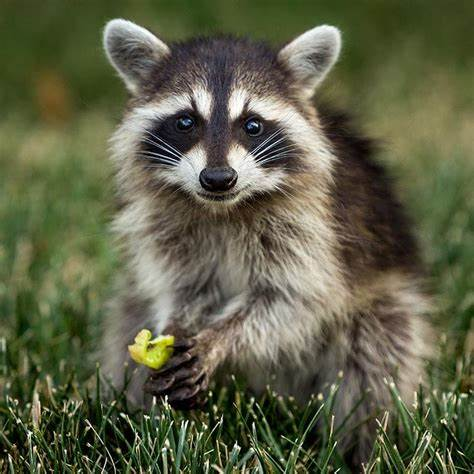

Mapache

Nombre común: Mapache
Nombre científico: Procyon lotor
Hábitat y estilo de vida:
El mapache es un mamífero nativo de América del Norte, aunque también se encuentra en algunas áreas de América Central. Prefiere bosques, zonas urbanas, riberas de ríos y áreas cercanas a cuerpos de agua, ya que es un excelente nadador. Son animales nocturnos y omnívoros, lo que significa que tienen una dieta variada que incluye frutas, insectos, pequeños vertebrados y restos de comida humana. Su habilidad para adaptarse a diferentes entornos, incluso en áreas urbanas, lo convierte en un animal muy versátil.
5 características del mapache:
- Máscara facial característica: El mapache es fácilmente reconocible por su pelaje de cara, que parece una máscara negra, y sus ojos oscuros. Esta máscara es una de sus características más distintivas.
- Habilidad para usar sus patas delanteras: Los mapaches tienen patas delanteras muy habilidosas que utilizan casi como manos. Son capaces de abrir contenedores, puertas y hasta manipular objetos, lo que les ha ganado fama por ser "ladrones" de comida.
- Comportamiento nocturno: Son animales nocturnos, lo que significa que están activos principalmente durante la noche. Durante el día, generalmente descansan en sus guaridas, que suelen estar en árboles, huecos o incluso estructuras humanas.
- Omnívoros y oportunistas: Los mapaches tienen una dieta variada y son conocidos por ser oportunistas. Se alimentan de frutas, insectos, pequeños animales, huevos, peces y restos de comida que puedan encontrar, adaptándose a lo que esté disponible.
- Buena capacidad de adaptación: Son animales muy adaptables y pueden vivir tanto en áreas silvestres como en zonas urbanas. A menudo se les encuentra cerca de las viviendas humanas, donde buscan comida fácilmente accesible, como basura o restos de alimentos.
regresar al menu